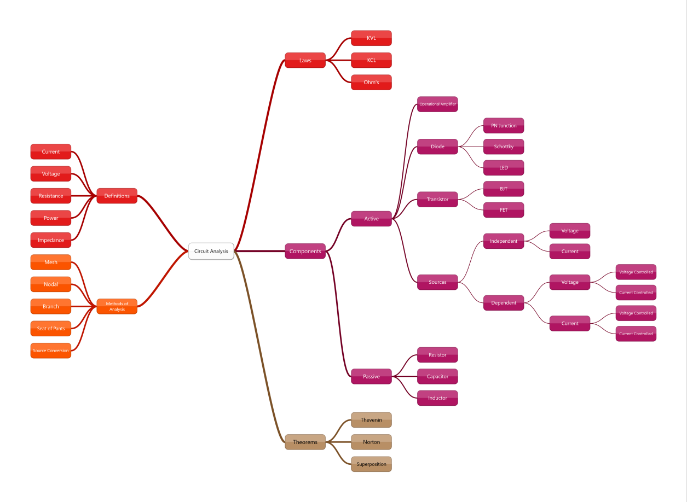

Capacitors: A First Step
Discharging Capacitor

\[ -i_C(t)-i_R(t)=0 \]
\[ i_C(t)+i_R(t)=0 \]
\[ i_C(t)=C\frac{dv_C(t)}{dt} \]
\[ i_R(t)=\frac{v_C(t)}{R} \]
\[ C\frac{dv_C(t)}{dt}+\frac{v_C(t)}{R}=0 \]
\[ RC\frac{dv_C(t)}{dt}+v_C(t)=0 \]
\[ RC\frac{dv_C(t)}{dt}=-v_C(t) \]
\[ RCdv_C(t)=-v_C(t)dt \]
\[ \frac{1}{v_C(t)}dv_C(t)=\frac{-1}{RC}dt \]
\[ \int_{v_C(0)}^{v_C(t)}\frac{1}{v_C(\mathcal{T})}dv_C(\mathcal{T})=\int_{0}^{t}\frac{-1}{RC}d\mathcal{T} \]
\[ \left.\ln~v_C(\mathcal{T})\right|_{v_C(0)}^{v_C(t)}=\left.\frac{-1}{RC}\mathcal{T}\right|_{0}^{t} \]
\[ \ln~v_C(t)-\ln~v_C(0)=\frac{-t}{RC}-\frac{-0}{RC} \]
\[ \ln~\frac{v_C(t)}{v_C(0)}=\frac{-t}{RC} \]
\[ \mathrm{e}^{\ln~\frac{v_C(t)}{v_C(0)}}=\mathrm{e}^{\frac{-t}{RC}} \]
\[ \frac{v_C(t)}{v_C(0)}=\mathrm{e}^{\frac{-t}{RC}} \]
\[ v_C(t)=v_C(0^{-})\mathrm{e}^{\frac{-t}{RC}} \]
Charging Capacitor
\[ i_R(t)-i_C(t)=0 \]
\[ i_C(t)=C\frac{dv_C(t)}{dt} \]
\[ i_R(t)=\frac{V_S-v_C(t)}{R} \]
\[ \frac{V_S-v_C(t)}{R}-C\frac{dv_C(t)}{dt}=0 \]
\[ V_S-v_C(t)-RC\frac{dv_C(t)}{dt}=0 \]
\[ -RC\frac{dv_C(t)}{dt}=v_C(t)-V_S \]
\[ \frac{dv_C(t)}{dt}=\frac{v_C(t)-V_S}{-RC} \]
\[ dv_C(t)=\frac{(v_C(t)-V_S)dt}{-RC} \]
\[ \int_{v_C(0)}^{v_C(t)}\frac{1}{(v_C(\mathcal{T})-V_S)}dv_C(\mathcal{T})=\int_{0}^{t}\frac{-1}{RC}d\mathcal{T} \]
\[ \left.\ln~\left[v_C(\mathcal{T})-V_S\right]\right|_{v_C(0)}^{v_C(t)}=\left.\frac{-1}{RC}\mathcal{T}\right|_{0}^{t} \]
\[ \ln~\left[v_C(t)-V_S\right]-\ln~\left[v_C(0)-V_S\right]=\frac{-t}{RC}-\frac{-0}{RC} \]
\[ \ln~\frac{v_C(t)-V_S}{v_C(0)-V_S}=\frac{-t}{RC} \]
\[ \exp\left(\ln~\frac{v_C(t)-V_S}{v_C(0)-V_S}\right)=\exp\left(\frac{-t}{RC}\right) \]
\[ \frac{v_C(t)-V_S}{v_C(0)-V_S}=\exp\left(\frac{-t}{RC}\right) \]
\[ v_C(t)-V_S=(v_C(0)-V_S)\exp\left(\frac{-t}{RC}\right) \]
\[ v_C(t)=V_S+(v_C(0)-V_S)\exp\left(\frac{-t}{RC}\right) \]
Inductors: A First Step
Discharging Inductor
\[ -v_L(t)-v_R(t)=0 \]
\[ v_L(t)+v_R(t)=0 \]
\[ v_L(t)=L\frac{di_L(t)}{dt} \]
\[ v_R(t)=Ri_L(t) \]
\[ L\frac{di_L(t)}{dt}+Ri_L(t)=0 \]
\[ \frac{L}{R}\frac{di_L(t)}{dt}+i_L(t)=0 \]
\[ \frac{L}{R}\frac{di_L(t)}{dt}=-i_L(t) \]
\[ \frac{L}{R}di_L(t)=-i_L(t)dt \]
\[ \frac{1}{i_L(t)}di_L(t)=\frac{-1}{\frac{L}{R}}dt \]
\[ \int_{i_L(0)}^{i_L(t)}\frac{1}{i_L(\mathcal{T})}di_L(\mathcal{T})=\int_{0}^{t}\frac{-1}{\frac{L}{R}}d\mathcal{T} \]
\[ \left.\ln~i_L(\mathcal{T})\right|_{i_L(0)}^{i_L(t)}=\left.\frac{-1}{\frac{L}{R}}\mathcal{T}\right|_{0}^{t} \]
\[ \ln~i_L(t)-\ln~i_L(0)=\frac{-t}{\frac{L}{R}}-\frac{-0}{\frac{L}{R}} \]
\[ \ln~\frac{i_L(t)}{i_L(0)}=\frac{-t}{\frac{L}{R}} \]
\[ \exp\left({\ln~\frac{i_L(t)}{i_L(0)}}\right)=\exp\left({\frac{-t}{\frac{L}{R}}}\right) \]
\[ {\frac{i_L(t)}{i_L(0)}}=\exp\left({\frac{-t}{\frac{L}{R}}}\right) \]
\[ i_L(t)=i_L(0)\exp\left({\frac{-t}{\frac{L}{R}}}\right) \]
Charging Inductor
\[ V_S-v_R(t)-v_L(t)=0 \]
\[ v_L(t)=L\frac{di_L(t)}{dt} \]
\[ v_R(t)=Ri(t) \]
\[ V_S-Ri(t)-L\frac{di_L(t)}{dt}=0 \]
\[ \frac{V_S}{R}-i(t)-\frac{L}{R}\frac{di_L(t)}{dt}=0 \]
\[ -\frac{L}{R}\frac{di_L(t)}{dt}=i(t)-\frac{V_S}{R} \]
\[ \int_{i_L(0)}^{i_L(t)}\frac{1}{i(\mathcal{T})-\frac{V_S}{R}}di_L(\mathcal{T})=\int_{0}^{t}\frac{-1}{\frac{L}{R}}d\mathcal{T} \]
\[ \left.\ln~\left[i(\mathcal{T})-\frac{V_S}{R}\right]\right|_{i_L(0)}^{i_L(t)}=\left.\frac{-1}{\frac{L}{R}}\mathcal{T}\right|_{0}^{t} \]
\[ \ln~\left[i_L(t)-\frac{V_S}{R}\right]-\ln~\left[i_L(0)-\frac{V_S}{R}\right]=\frac{-t}{RC}-\frac{-0}{RC} \]
\[ \ln~\left[\frac{i_L(t)-\frac{V_S}{R}}{i_L(0)-\frac{V_S}{R}}\right]=\frac{-t}{RC} \]
\[ \exp\left(\ln~\left[\frac{i_L(t)-\frac{V_S}{R}}{i_L(0)-\frac{V_S}{R}}\right]\right)=\exp\left(\frac{-t}{RC}\right) \]
\[ \frac{i_L(t)-\frac{V_S}{R}}{i_L(0)-\frac{V_S}{R}}=\exp\left(\frac{-t}{RC}\right) \]
\[ i_L(t)-\frac{V_S}{R}=\left(i_L(0)-\frac{V_S}{R}\right)\exp\left(\frac{-t}{RC}\right) \]
\[ i_L(t)=\frac{V_S}{R}+\left(i_L(0)-\frac{V_S}{R}\right)\exp\left(\frac{-t}{RC}\right) \]
Alternative Solutions using Laplace Transforms
Brief Partial Fraction Expansion Review
This section covers partial fraction expansion as it will be performed here. This is not intended to be a thorough review.
Given a function over a polynomial, the fraction may be expanded into the form
\[ \frac{X(s)}{(s+a)(s+b)}=\frac{A}{s+a}+\frac{B}{s+b} \]
with
\[ A=\left.\frac{X(s)}{s+b}\right|_{s=-a}\text{~and~}B=\left.\frac{X(s)}{s+s}\right|_{s=-b} \]
Here are two examples worked in different ways. I don’t always remember how to use the formulas shown above as I will demonstrate in the first example. I can always remember how to derive it as I will show you in the second example.
Example
Expand
\[ F(s)=\frac{2s}{s^2+4s+3} \]
\Solution
\[ F(s)=\frac{A}{s+3}+\frac{B}{s+1} \]
\[ A=\left.\frac{2s}{s+1}\right|_{s=-3}=\frac{-6}{-2}=3 \]
\[ B=\left.\frac{2s}{s+3}\right|_{s=-1}=\frac{-2}{2}=-1 \]
\[ F(s)=\frac{3}{s+3}+\frac{-1}{s+1} \]
Example
Expand
\[ F(s)=\frac{1}{s^2+2s-3} \]
\Solution
\[ \frac{1}{s^2+2s-3}=\frac{A}{s+3}+\frac{B}{s-1} \]
\[ \frac{1}{s^2+2s-3}=\frac{A(s-1)}{(s+3)(s-1)}+\frac{B(s+3)}{(s-1)(s+3)} \]
\[ \frac{1}{s^2+2s-3}=\frac{A(s-1)+B(s+3)}{(s+3)(s-1)} \]
\[ \frac{1}{s^2+2s-3}=\frac{A(s-1)+B(s+3)}{s^2+2s-3} \]
\[ 1=A(s-1)+B(s+3) \]
when \(s=1\)
\[ 1=A((1)-1)+B((1)+3)=A(0)+B(4) \]
\[ 1=4B \]
\[ B=\frac{1}{4}=0.25 \]
when \(s=-3\)
\[ 1=A((-3)-1)+B((-3)+3)=A(-4)+B(0) \]
\[ 1=-4A=-0.25 \]
\[ A=-\frac{1}{4} \]
so,
\[ F(s)=\frac{-0.25}{s+3}+\frac{0.25}{s+1} \]
Discharging Capacitor
\[ -i_C(t)-i_R(t)=0 \]
\[ i_C(t)+i_R(t)=0 \]
\[ i_C(t)=C\frac{dv_C(t)}{dt} \]
\[ i_R(t)=\frac{v_C(t)}{R} \]
\[ C\frac{dv_C(t)}{dt}+\frac{v_C(t)}{R}=0 \]
\[ \frac{dv_C(t)}{dt}+\frac{1}{RC}v_C(t)=0 \]
\[ \mathcal{L}\left[RC\frac{dv_C(t)}{dt}+v_C(t)\right]=\mathcal{L}\left[0\right] \]
\[ sV_C(s)-v_C(0^{-})+\frac{V_C(s)}{RC}=0 \]
\[ sV_C(s)+\frac{V_C(s)}{RC}=v_C(0^{-}) \]
\[ V_C(s)\left[s+\frac{1}{RC}\right]=v_C(0^{-}) \]
\[ V_C(s)=\frac{v_C(0^{-})}{s+\frac{1}{RC}} \]
\[ \mathcal{L}^{-1}\left[V_C(s)\right]=\mathcal{L}^{-1}\left[\frac{v_C(0^{-})}{s+\frac{1}{RC}}\right] \]
\[ v_C(t)=v_C(0^{-})\exp\left(\frac{-t}{RC}\right) \]
Charging Capacitor
\[ i_R(t)-i_C(t)=0 \]
\[ i_C(t)=C\frac{dv_C(t)}{dt} \]
\[ i_R(t)=\frac{V_S-v_C(t)}{R} \]
\[ \frac{V_S-v_C(t)}{R}-C\frac{dv_C(t)}{dt}=0 \]
\[ \frac{V_S}{RC}-\frac{v_C(t)}{RC}-\frac{dv_C(t)}{dt}=0 \]
\[ \mathcal{L}\left[\frac{V_S}{RC}-\frac{v_C(t)}{RC}-\frac{dv_C(t)}{dt}\right]=\mathcal{L}\left[0\right] \]
\[ \frac{V_S}{sRC}-\frac{V_C(s)}{RC}-sV_C(s)+v_C(0^{-})=0 \]
\[ \frac{V_S}{sRC}+v_C(0^{-})=\frac{V_C(s)}{RC}+sV_C(s) \]
\[ \frac{V_S}{sRC}+v_C(0^{-})=V_C(s)\left[\frac{1}{RC}+s\right] \]
\[ V_C(s)=\frac{\frac{V_S}{sRC}+v_C(0^{-})}{s+\frac{1}{RC}} \]
\[ V_C(s)=\frac{\frac{V_S}{sRC}}{s+\frac{1}{RC}}+\frac{v_C(0^{-})}{s+\frac{1}{RC}} \]
\[ V_C(s)=\frac{\frac{V_S}{RC}}{s\left(s+\frac{1}{RC}\right)}+\frac{v_C(0^{-})}{s+\frac{1}{RC}} \]
\[ V_C(s)=\frac{A}{s}+\frac{B}{s+\frac{1}{RC}}+\frac{v_C(0^{-})}{s+\frac{1}{RC}} \]
\[ A=\left.\frac{\frac{V_S}{RC}}{s+\frac{1}{RC}}\right|_{s=0}=\frac{\frac{V_S}{RC}}{\frac{1}{RC}}=V_S \]
\[ B=\left.\frac{\frac{V_S}{RC}}{s}\right|_{s=-\frac{1}{RC}}=\frac{\frac{V_S}{RC}}{-\frac{1}{RC}}=-V_S \]
\[ V_C(s)=\frac{V_S}{s}-\frac{V_S}{s+\frac{1}{RC}}+\frac{v_C(0^{-})}{s+\frac{1}{RC}} \]
\[ \mathcal{L}^{-1}\left[V_C(s)\right]=\mathcal{L}^{-1}\left[\frac{V_S}{s}-\frac{V_S}{s+\frac{1}{RC}}+\frac{v_C(0^{-})}{s+\frac{1}{RC}}\right] \]
\[ v_C(t)=V_S-V_S\exp\left(\frac{-t}{RC}\right)+v_C(0^{-})\exp\left(\frac{-t}{RC}\right) \]
\[ v_C(t)=V_S+\left[v_C(0^{-})-V_S\right]\exp\left(\frac{-t}{RC}\right) \]
Discharging Inductor
\[ -v_L(t)-v_R(t)=0 \]
\[ v_L(t)+v_R(t)=0 \]
\[ v_L(t)=L\frac{di_L(t)}{dt} \]
\[ v_R(t)=Ri_L(t) \]
\[ L\frac{di_L(t)}{dt}+Ri_L(t)=0 \]
\[ \frac{di_L(t)}{dt}+\frac{R}{L}i_L(t)=0 \]
\[ \mathcal{L}\left[\frac{di_L(t)}{dt}+\frac{R}{L}i_L(t)\right]=\mathcal{L}\left[0\right] \]
\[ sI(s)-i_L(0^{-})+\frac{R}{L}I(s)=0 \]
\[ sI(s)+\frac{R}{L}I(s)=i_L(0^{-}) \]
\[ I(s)\left[s+\frac{R}{L}\right]=i_L(0^{-}) \]
\[ I(s)=\frac{i_L(0^{-})}{s+\frac{R}{L}} \]
\[ \mathcal{L}^{-1}\left[I(s)\right]=\mathcal{L}^{-1}\left[\frac{i_L(0^{-})}{s+\frac{R}{L}}\right] \]
\[ i_L(t)=i_L(0^{-})\exp\left(\frac{-Rt}{L}\right) \]
\[ i_L(t)=i_L(0^{-})\exp\left(\frac{-t}{\frac{L}{R}}\right) \]
Charging Inductor
\[ V_S-v_R(t)-v_L(t)=0 \]
\[ v_L(t)=L\frac{di_L(t)}{dt} \]
\[ v_R(t)=Ri(t) \]
\[ V_S-Ri(t)-L\frac{di_L(t)}{dt}=0 \]
\[ \frac{V_S}{L}-\frac{R}{L}i(t)-\frac{di_L(t)}{dt}=0 \]
\[ \mathcal{L}\left[\frac{V_S}{L}-\frac{R}{L}i(t)-\frac{di_L(t)}{dt}\right]=\mathcal{L}\left[0\right] \]
\[ \frac{V_S}{sL}-\frac{R}{L}I(s)-sI(s)+i_L(0^{-})=0 \]
\[ \frac{V_S}{sL}+i_L(0^{-})=sI(s)+\frac{R}{L}I(s) \]
\[ \frac{V_S}{sL}+i_L(0^{-})=I(s)\left[s+\frac{R}{L}\right] \]
\[ \frac{\frac{V_S}{sL}+i_L(0^{-})}{s+\frac{R}{L}}=I(s) \]
\[ \frac{\frac{V_S}{sL}}{s+\frac{R}{L}}+\frac{i_L(0^{-})}{s+\frac{R}{L}}=I(s) \]
\[ \frac{\frac{V_S}{L}}{s(s+\frac{R}{L})}+\frac{i_L(0^{-})}{s+\frac{R}{L}}=I(s) \]
\[ \frac{A}{s}+\frac{B}{s+\frac{R}{L}}+\frac{i_L(0^{-})}{s+\frac{R}{L}}=I(s) \]
\[ A=\left.\frac{\frac{V_S}{L}}{s+\frac{R}{L}}\right|_{s=0}=\frac{\frac{V_S}{L}}{\frac{R}{L}}=\frac{V_S}{R} \]
\[ B=\left.\frac{\frac{V_S}{L}}{s}\right|_{s=-\frac{R}{L}}=\frac{\frac{V_S}{L}}{-\frac{R}{L}}=-\frac{V_S}{R} \]
\[ \frac{\frac{V_S}{R}}{s}-\frac{\frac{V_S}{R}}{s+\frac{R}{L}}+\frac{i_L(0^{-})}{s+\frac{R}{L}}=I(s) \]
\[ \frac{V_S}{R}-\frac{V_S}{R}\exp\left(\frac{-t}{\frac{L}{R}}\right)+i_L(0^{-})\exp\left(\frac{-t}{\frac{L}{R}}\right)=i_L(t) \]
\[ i_L(t)=\frac{V_S}{R}+\left[i_L(0^{-})-\frac{V_S}{R}\right]\exp\left(\frac{-t}{\frac{L}{R}}\right) \]
{kind=link}